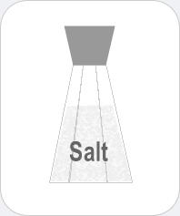

|  |
Salt
Chemicals you may find: Halite, Sodium chloride Glucose |
| Table salt, also known as sodium chloride, is a chemical compound that is the main ingredient in edible salts that are commonly used as condiments or preservatives for food. The crystals of sodium chloride are collected through the evaporation of seawater or brine but can also be mined from halite rocks. Salt of biological importance as it is necessary for the propagation of nerve impulses. Other components of table salt may be potassium iodide that is incorporated to prevent medical conditions such as goiter and/or mental retardation associated with iodine deficiency; also add ed is glucose to prevent the decomposition of potassium iodide. Another component may be calcium silicate which is employed to prevent the absorption of water from the air. | |